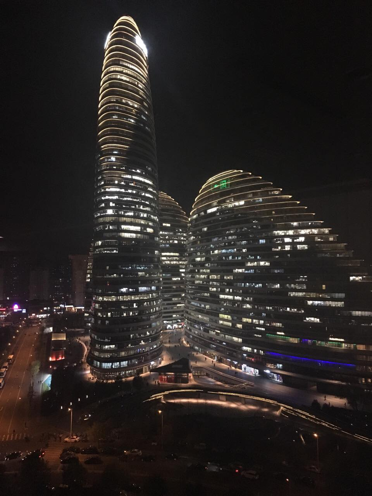

告别无数个阶段, 然后
发现自己老了!!!!
发现自己成熟了那么一些些...P.S: 好坏待定
还有三天, 突然想好好回忆下自己都干了些啥
2016.10.8-2016-12.4
这一段的主题叫: 大牌车
经常在给一些客户做项目, 做那些卖着我们买不起的东西的网站
大概富士康流水线上的工人也就是这么个感觉吧
看着项目启动, 看着跟客户一轮一轮地谈判
看着不断地推翻重来, 看着一旦错过时机就再也回不了头的那些
看着新人努力, 看着senior的自我保护, 看着熟悉的同事转身变了甲方
都说上帝的视角如何如何, 不过是旁观者清. 第一次以这样的角度去感受工作
那些别人踩过的坑, 在观察和假装的感同身受里面沉淀成了自己的经验
时刻提醒自己, 要敢于面对自己做错的事情
不要在一开始就预设立场, 不要轻易下结论, 不要永远把甲乙放在对立面
在这个阶段学会的技能, 在后来的那个非常糟心的项目里居然就用上了
回忆事情的时候, 会觉得冥冥中自有天意,该做的少不了, 该遇到的也逃不掉
2016.12.4-2016-12.30
非常客观地说, 是我五年工作里面做的最糟心的项目. 这个客观可能来源于.....情绪
目标模糊, 大而空泛. 画一张不知道存在于哪个空间的大饼, 忽悠着一群看起来觉得有点可悲的人
我不迷信MBTI的人格测试, 但是大部分还是挺准的
比如INTJ的我, 异常强的计划性, 被每半天一个版本的计划折腾得频临崩溃
鸡血满满的女领导, 致力于专业忽悠的架构师, 在后来不断回忆的过程中, 我深深觉得一开始就是个错
有时候要相信自己的直觉和判断, 以及我再也不相信老大说的好机会
感觉是比上一个让我买了LV包包安慰自己的项目更元气大伤, 每一分每一秒都在想逃离
以至于某天销售看到我的时候, 跟同事说觉得我快火山爆发了...
最开心的时间是每天中午吃完饭, 坐在客户家还算舒服的草坪上
晒着深圳冬天的阳光, 数着小池塘的鱼, 吐槽+开脑洞+想办法+Retro
靠着那点阳光,积攒能量应对一下午的事情
印象最深刻也是最崩溃的事情, 离开前的第二天
我花了八个小时, 跟一个脑子缺弦的人讲方案. 我自认为我大概把所有我能想到的方面都分析给他听了
耐心细致到都快感动自己了
第二天下午TMD居然带人来翻盘........
同事给了我一个比喻, 就像一群人打牌, 所有人都出完了,他从最底下又把自己的牌拿回来
不想描述心情, 我的文字能力不足以形容
我那天站在安全通道的楼梯边上站了好久, 看着诡异的楼道转向, 觉得快被吞噬

熬到下班, 微笑着说再见, 拖着箱子出门, 心里连一点释放的感觉都没有
打车去机场, 坐进车里那一瞬间开始泪崩, 幸好天黑, 幸好司机不爱说话
委屈和挫败感牢牢地封住了自己, 我发微信说打算闭关不说话不见人...
决定装个鸵鸟的时候,被安慰+被训, 温柔背后不知道是不是恨铁不成钢的失望
坐在飞机上看窗外的时候, 想起来几年前的一个项目, 参与的同事说,项目失败,世界都是斜的
那个项目的后续我做了, 第一次让我知道了不是所有的努力都会有结果, 现在,是第二次
2016年的最后一天, 打怪不升级结束🔚, 以我深深的挫败感告终.
2017.2.5-2017-4.28
中间有一个月的断片, 没什么记忆了,估计也就是在家折腾
过了个灰常开心的春节之后就去成都写代码了...恩....纯写代码的那种
大概是这段时间以来最开心的两周了吧, 每天的节奏都是一样的
咖啡开工, 写代码,勾搭妹子吃饭逛街买零食, 写代码写代码写代码写代码直到下班
导致我有种想在成都一直待下去的感觉［虽然知道这是不可能的]
然后到北京, 在另一个国企风格的客户现场熬过了超级无聊的两周
再然后, 跟老大去成都一周, 他开会, 我蹭会, 其他时间依然是勾搭妹子喝咖啡吃饭逛街写代码
再然后, 中间跑了上海两次, 完全不需要的售前..只当学习吧...
剩下的时间, 在北京office里面, 坐在能看到来福士的窗户边
蹭饭, 开会, 写代码, 看书, 发呆..
谁知道是疲惫期还是什么, 最后这一周, 每一天都觉得是最后一天
前前后后一共半年
出差久了吧, 人总会变得脆弱一些.除了工作的事情并不算太经常说话.
饿了叫外卖, 难受了躺躺扛过去, 无聊了刷剧看书写字.
北京春天最好的时间,我经常在公寓一宅就是两天三夜, 外卖挽救了我免于饿死.
已经无比无比地想回家了, 却依然觉得要有始有终,把最后这无所事事的一周熬过去.
明知并没有太大意义, 可是心里就是有那种强烈的仪式感.好好的, 到时间, 说再见, 然后离开
这半年中, 接触了很多人.在别人身上发现不同的优点, 不经意间拿来对比自己的缺点, 自信心被打击了不少
工作五年了,我以为的很久,却发现不过是另一个刚刚开始, 搞得我都想要不要来一个gap year干点什么
心理上决定给自己归个零, 重新开始.
话是这么说, 谁都不知道不会一下子天翻地覆. 那些要改的缺点,一点点来吧
最近倒是经常刷知乎, 看一些人生为什么要努力的问题
悲催的发现, 我的人生, 真的不算努力啊, 靠着点小聪明, 居然就混到现在了
虽说胸无大志,小富即安. 前提是..得小富,得能安
没有大追求的人, 把每一件事情用心做好就好了.
这一堆乱七八糟的胡言乱语, 全当纪念了.纪念这一段做很多,想更多的时间.
2017, 三十年, 十年, 五年.